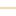

<!doctype html>
<html lang="en">
    <head>
        <meta charset="utf-8">
        <meta http-equiv="X-UA-Compatible" content="IE=edge">
        <meta name="viewport" content="initial-scale=1,user-scalable=no,maximum-scale=1,width=device-width">
        <meta name="mobile-web-app-capable" content="yes">
        <meta name="apple-mobile-web-app-capable" content="yes">
        <link rel="stylesheet" href="css/leaflet.css"><link rel="stylesheet" href="css/L.Control.Locate.min.css">
        <link rel="stylesheet" href="css/qgis2web.css"><link rel="stylesheet" href="css/fontawesome-all.min.css">
        <link rel="stylesheet" href="css/leaflet-measure.css">
        <style>
        html, body, #map {
            width: 100%;
            height: 100%;
            padding: 0;
            margin: 0;
        }
        </style>
        <title></title>
    </head>
    <body>
        <div id="map">
        </div>
        <script src="js/qgis2web_expressions.js"></script>
        <script src="js/leaflet.js"></script><script src="js/L.Control.Locate.min.js"></script>
        <script src="js/leaflet.rotatedMarker.js"></script>
        <script src="js/leaflet.pattern.js"></script>
        <script src="js/leaflet-hash.js"></script>
        <script src="js/Autolinker.min.js"></script>
        <script src="js/rbush.min.js"></script>
        <script src="js/labelgun.min.js"></script>
        <script src="js/labels.js"></script>
        <script src="js/leaflet-measure.js"></script>
        <script src="data/MUNICIPIODEAMOZOC_1.js"></script>
        <script src="data/REDVIAL_2.js"></script>
        <script>
        var map = L.map('map', {
            zoomControl:true, maxZoom:28, minZoom:1
        }).fitBounds([[19.015738794799013,-98.04462936467296],[19.049708223840785,-97.98887667388229]]);
        var hash = new L.Hash(map);
        map.attributionControl.setPrefix('<a href="https://github.com/tomchadwin/qgis2web" target="_blank">qgis2web</a> &middot; <a href="https://leafletjs.com" title="A JS library for interactive maps">Leaflet</a> &middot; <a href="https://qgis.org">QGIS</a>');
        var autolinker = new Autolinker({truncate: {length: 30, location: 'smart'}});
        L.control.locate({locateOptions: {maxZoom: 19}}).addTo(map);
        var measureControl = new L.Control.Measure({
            position: 'topleft',
            primaryLengthUnit: 'meters',
            secondaryLengthUnit: 'kilometers',
            primaryAreaUnit: 'sqmeters',
            secondaryAreaUnit: 'hectares'
        });
        measureControl.addTo(map);
        document.getElementsByClassName('leaflet-control-measure-toggle')[0]
        .innerHTML = '';
        document.getElementsByClassName('leaflet-control-measure-toggle')[0]
        .className += ' fas fa-ruler';
        var bounds_group = new L.featureGroup([]);
        function setBounds() {
        }
        map.createPane('pane_OSMStandard_0');
        map.getPane('pane_OSMStandard_0').style.zIndex = 400;
        var layer_OSMStandard_0 = L.tileLayer('http://tile.openstreetmap.org/{z}/{x}/{y}.png', {
            pane: 'pane_OSMStandard_0',
            opacity: 1.0,
            attribution: '<a href="https://www.openstreetmap.org/copyright">© OpenStreetMap contributors, CC-BY-SA</a>',
            minZoom: 1,
            maxZoom: 28,
            minNativeZoom: 0,
            maxNativeZoom: 19
        });
        layer_OSMStandard_0;
        map.addLayer(layer_OSMStandard_0);
        function pop_MUNICIPIODEAMOZOC_1(feature, layer) {
            var popupContent = '<table>\
                    <tr>\
                        <td colspan="2">' + (feature.properties['qc_id'] !== null ? autolinker.link(feature.properties['qc_id'].toLocaleString()) : '') + '</td>\
                    </tr>\
                    <tr>\
                        <td colspan="2">' + (feature.properties['cvegeo'] !== null ? autolinker.link(feature.properties['cvegeo'].toLocaleString()) : '') + '</td>\
                    </tr>\
                    <tr>\
                        <td colspan="2">' + (feature.properties['cve_ent'] !== null ? autolinker.link(feature.properties['cve_ent'].toLocaleString()) : '') + '</td>\
                    </tr>\
                    <tr>\
                        <td colspan="2">' + (feature.properties['cve_mun'] !== null ? autolinker.link(feature.properties['cve_mun'].toLocaleString()) : '') + '</td>\
                    </tr>\
                    <tr>\
                        <td colspan="2">' + (feature.properties['nomgeo'] !== null ? autolinker.link(feature.properties['nomgeo'].toLocaleString()) : '') + '</td>\
                    </tr>\
                </table>';
            layer.bindPopup(popupContent, {maxHeight: 400});
        }

        function style_MUNICIPIODEAMOZOC_1_0() {
            return {
                pane: 'pane_MUNICIPIODEAMOZOC_1',
                opacity: 1,
                color: 'rgba(228,26,28,1.0)',
                dashArray: '',
                lineCap: 'butt',
                lineJoin: 'miter',
                weight: 2.0, 
                fillOpacity: 0,
                interactive: true,
            }
        }
        map.createPane('pane_MUNICIPIODEAMOZOC_1');
        map.getPane('pane_MUNICIPIODEAMOZOC_1').style.zIndex = 401;
        map.getPane('pane_MUNICIPIODEAMOZOC_1').style['mix-blend-mode'] = 'normal';
        var layer_MUNICIPIODEAMOZOC_1 = new L.geoJson(json_MUNICIPIODEAMOZOC_1, {
            attribution: '',
            interactive: true,
            dataVar: 'json_MUNICIPIODEAMOZOC_1',
            layerName: 'layer_MUNICIPIODEAMOZOC_1',
            pane: 'pane_MUNICIPIODEAMOZOC_1',
            onEachFeature: pop_MUNICIPIODEAMOZOC_1,
            style: style_MUNICIPIODEAMOZOC_1_0,
        });
        bounds_group.addLayer(layer_MUNICIPIODEAMOZOC_1);
        map.addLayer(layer_MUNICIPIODEAMOZOC_1);
        function pop_REDVIAL_2(feature, layer) {
            var popupContent = '<table>\
                    <tr>\
                        <td colspan="2">' + (feature.properties['ID_RED'] !== null ? autolinker.link(feature.properties['ID_RED'].toLocaleString()) : '') + '</td>\
                    </tr>\
                    <tr>\
                        <td colspan="2">' + (feature.properties['TIPO_VIAL'] !== null ? autolinker.link(feature.properties['TIPO_VIAL'].toLocaleString()) : '') + '</td>\
                    </tr>\
                    <tr>\
                        <td colspan="2">' + (feature.properties['NOMBRE'] !== null ? autolinker.link(feature.properties['NOMBRE'].toLocaleString()) : '') + '</td>\
                    </tr>\
                    <tr>\
                        <td colspan="2">' + (feature.properties['CODIGO'] !== null ? autolinker.link(feature.properties['CODIGO'].toLocaleString()) : '') + '</td>\
                    </tr>\
                    <tr>\
                        <td colspan="2">' + (feature.properties['COND_PAV'] !== null ? autolinker.link(feature.properties['COND_PAV'].toLocaleString()) : '') + '</td>\
                    </tr>\
                    <tr>\
                        <td colspan="2">' + (feature.properties['RECUBRI'] !== null ? autolinker.link(feature.properties['RECUBRI'].toLocaleString()) : '') + '</td>\
                    </tr>\
                    <tr>\
                        <td colspan="2">' + (feature.properties['CARRILES'] !== null ? autolinker.link(feature.properties['CARRILES'].toLocaleString()) : '') + '</td>\
                    </tr>\
                    <tr>\
                        <td colspan="2">' + (feature.properties['ESTATUS'] !== null ? autolinker.link(feature.properties['ESTATUS'].toLocaleString()) : '') + '</td>\
                    </tr>\
                    <tr>\
                        <td colspan="2">' + (feature.properties['CONDICION'] !== null ? autolinker.link(feature.properties['CONDICION'].toLocaleString()) : '') + '</td>\
                    </tr>\
                    <tr>\
                        <td colspan="2">' + (feature.properties['NIVEL'] !== null ? autolinker.link(feature.properties['NIVEL'].toLocaleString()) : '') + '</td>\
                    </tr>\
                    <tr>\
                        <td colspan="2">' + (feature.properties['PEAJE'] !== null ? autolinker.link(feature.properties['PEAJE'].toLocaleString()) : '') + '</td>\
                    </tr>\
                    <tr>\
                        <td colspan="2">' + (feature.properties['ADMINISTRA'] !== null ? autolinker.link(feature.properties['ADMINISTRA'].toLocaleString()) : '') + '</td>\
                    </tr>\
                    <tr>\
                        <td colspan="2">' + (feature.properties['JURISDI'] !== null ? autolinker.link(feature.properties['JURISDI'].toLocaleString()) : '') + '</td>\
                    </tr>\
                    <tr>\
                        <td colspan="2">' + (feature.properties['CIRCULA'] !== null ? autolinker.link(feature.properties['CIRCULA'].toLocaleString()) : '') + '</td>\
                    </tr>\
                    <tr>\
                        <td colspan="2">' + (feature.properties['ESCALA_VIS'] !== null ? autolinker.link(feature.properties['ESCALA_VIS'].toLocaleString()) : '') + '</td>\
                    </tr>\
                    <tr>\
                        <td colspan="2">' + (feature.properties['VELOCIDAD'] !== null ? autolinker.link(feature.properties['VELOCIDAD'].toLocaleString()) : '') + '</td>\
                    </tr>\
                    <tr>\
                        <td colspan="2">' + (feature.properties['UNION_INI'] !== null ? autolinker.link(feature.properties['UNION_INI'].toLocaleString()) : '') + '</td>\
                    </tr>\
                    <tr>\
                        <td colspan="2">' + (feature.properties['UNION_FIN'] !== null ? autolinker.link(feature.properties['UNION_FIN'].toLocaleString()) : '') + '</td>\
                    </tr>\
                    <tr>\
                        <td colspan="2">' + (feature.properties['LONGITUD'] !== null ? autolinker.link(feature.properties['LONGITUD'].toLocaleString()) : '') + '</td>\
                    </tr>\
                    <tr>\
                        <td colspan="2">' + (feature.properties['ANCHO'] !== null ? autolinker.link(feature.properties['ANCHO'].toLocaleString()) : '') + '</td>\
                    </tr>\
                    <tr>\
                        <td colspan="2">' + (feature.properties['FECHA_ACT'] !== null ? autolinker.link(feature.properties['FECHA_ACT'].toLocaleString()) : '') + '</td>\
                    </tr>\
                    <tr>\
                        <td colspan="2">' + (feature.properties['CALIREPR'] !== null ? autolinker.link(feature.properties['CALIREPR'].toLocaleString()) : '') + '</td>\
                    </tr>\
                    <tr>\
                        <td colspan="2">' + (feature.properties['CVEGEO'] !== null ? autolinker.link(feature.properties['CVEGEO'].toLocaleString()) : '') + '</td>\
                    </tr>\
                    <tr>\
                        <td colspan="2">' + (feature.properties['CVE_ENT'] !== null ? autolinker.link(feature.properties['CVE_ENT'].toLocaleString()) : '') + '</td>\
                    </tr>\
                    <tr>\
                        <td colspan="2">' + (feature.properties['CVE_MUN'] !== null ? autolinker.link(feature.properties['CVE_MUN'].toLocaleString()) : '') + '</td>\
                    </tr>\
                    <tr>\
                        <td colspan="2">' + (feature.properties['NOMGEO'] !== null ? autolinker.link(feature.properties['NOMGEO'].toLocaleString()) : '') + '</td>\
                    </tr>\
                </table>';
            layer.bindPopup(popupContent, {maxHeight: 400});
        }

        function style_REDVIAL_2_0(feature) {
            switch(String(feature.properties['JURISDI'])) {
                case 'N/A':
                    return {
                pane: 'pane_REDVIAL_2',
                opacity: 1,
                color: 'rgba(248,140,24,1.0)',
                dashArray: '',
                lineCap: 'square',
                lineJoin: 'bevel',
                weight: 1.0,
                fillOpacity: 0,
                interactive: true,
            }
                    break;
                case 'Pue.':
                    return {
                pane: 'pane_REDVIAL_2',
                opacity: 1,
                color: 'rgba(0,0,102,1.0)',
                dashArray: '',
                lineCap: 'square',
                lineJoin: 'bevel',
                weight: 1.0,
                fillOpacity: 0,
                interactive: true,
            }
                    break;
                case 'Fed.':
                    return {
                pane: 'pane_REDVIAL_2',
                opacity: 1,
                color: 'rgba(7,92,7,1.0)',
                dashArray: '',
                lineCap: 'square',
                lineJoin: 'bevel',
                weight: 1.0,
                fillOpacity: 0,
                interactive: true,
            }
                    break;
                case 'N/D':
                    return {
                pane: 'pane_REDVIAL_2',
                opacity: 1,
                color: 'rgba(222,173,112,1.0)',
                dashArray: '',
                lineCap: 'square',
                lineJoin: 'bevel',
                weight: 1.0,
                fillOpacity: 0,
                interactive: true,
            }
                    break;
            }
        }
        map.createPane('pane_REDVIAL_2');
        map.getPane('pane_REDVIAL_2').style.zIndex = 402;
        map.getPane('pane_REDVIAL_2').style['mix-blend-mode'] = 'normal';
        var layer_REDVIAL_2 = new L.geoJson(json_REDVIAL_2, {
            attribution: '',
            interactive: true,
            dataVar: 'json_REDVIAL_2',
            layerName: 'layer_REDVIAL_2',
            pane: 'pane_REDVIAL_2',
            onEachFeature: pop_REDVIAL_2,
            style: style_REDVIAL_2_0,
        });
        bounds_group.addLayer(layer_REDVIAL_2);
        map.addLayer(layer_REDVIAL_2);
        var baseMaps = {};
        L.control.layers(baseMaps,{'RED VIAL<br /><table><tr><td style="text-align: center;"></td><td>MUNICIPAL</td></tr><tr><td style="text-align: center;"></td><td>ESTATAL</td></tr><tr><td style="text-align: center;"></td><td>FEDERAL</td></tr><tr><td style="text-align: center;"></td><td>N/D</td></tr></table>': layer_REDVIAL_2,' MUNICIPIO DE AMOZOC': layer_MUNICIPIODEAMOZOC_1,"OSM Standard": layer_OSMStandard_0,},{collapsed:false}).addTo(map);
        setBounds();
        </script>
    </body>
</html>
